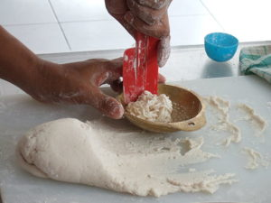
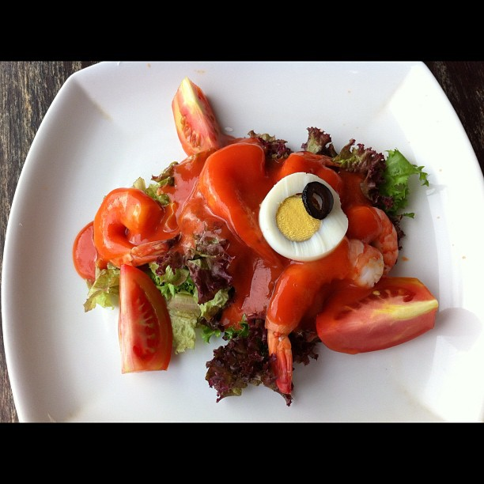

Apakah resep masakan dilindungi oleh Hak Cipta?

Anda hobi memasak dengan resep yang buatan sendiri?
Anda suka membuat ‘improvisasi’ setiap kali anda memasak?
Atau, Anda adalah seorang pengajar di sebuah sekolah masak yang yang menggunakan resep buatan sendiri atau orang lain sebagai bahan ajar?
Pernah terpikirkan apakah resep masakan mendapatkan perlindungan Hak Cipta? Apa saja unsur-unsur Resep Masakan yang tidak dilindungi Hak Cipta?
1.) Elemen fungsional bukan obyek yang dilindungi Hak Cipta

{kind=link}
Terdapat kemiripan posisi hukum antara resep masakan dengan program perangkat lunak. Resep maskaan merupakan sekumpulan instruksi yang dibuat untuk menuju sebuah hasil yang pasti, dengan kata lain, resep masakan memiliki elemen fungsional. Di Inggris, elemen fungsional bukan merupakan obyek yang dilindungi, jadi apabila anda memasak resep masakan yang dibuat orang lain dan membuat beberapa perubahan pada resep masakan tersebut, anda tidak sedang melakukan pelanggaran hak cipta.
Hal serupa juga dijelaskan pada huruf c dari Pasal 41 Undang-Undang No. 28 Tahun 2014 Tentang Hak Cipta (UUHC). Pasal tersebut menyatakan bahwa segala alat, benda, atau produk yang diciptakan hanya untuk menyelesaikan masalah teknis atau yang bentuknya hanya ditujukan untuk kebutuhan fungsional tidak dilindungi oleh Hak Cipta.
2. Ide bukan obyek yang dilindungi oleh Hak Cipta.
Anda tidak bisa menerapkan hak cipta pada prinsip dasar penciptaan resep masakan, dan Anda tidak bisa menghentikan orang untuk memiliki satu versi pribadi atas suatu resep. Menurut UUHC, walaupun setiap ide tersebut telah diungkapkan, dinyatakan, digambarkan, dijelaskan, atau digabungkan dalam sebuah ciptaan, jika ide tersebut belum diwujudkan dalam bentuk nyata, maka ide tidak dilindungi oleh Hak Cipta.
3. Hak Cipta dapat melindungi elemen artistik dari suatu resep masakan

Jenis perlindungan akan diberikan secara khusus pada unsur tekstual atau visual dari masakan itu sendiri. Desain atau ‘hiasan’ hasil kreasi Anda yang diterapkan pada suatu masakan dapat dilindungi Hak Cipta. Ketika Anda menerbitkan resep masakan dalam bentuk buku, maka ekspresi yang tertuang pada teks dan gambar di buku tersebut merupakan obyek yang dilindungi oleh Hak Cipta. Karena, hasil karya yang belum diwujudkan secara nyata tidak dilindungi oleh Hak Cipta (huruf a Pasal 41 UUHC).
Artikel ini adalah versi terjemahan yang telah disesuaikan dengan konteks Indonesia dari artikel berjudul: “Can you copyright a recipe?” oleh Andres Guadamuz
Tags:
Oleh: Hilman Fathoni
19 Jun 2016Kategori:
Berita Terbaru
- Lokakarya Hak Cipta dan Lisensi Creative Commons di Pekanbaru
- Pengumuman Resmi: Hasil Akhir Training of Trainers Creative Commons Indonesia
- Literatur tentang Model Bisnis Terbuka "Made With CC"
- Data dan Artikel Ilmiah Terbuka dari PLOS!
- Konten Format Model 3 Dimensi Berilsensi CC di Platform Sketchfab